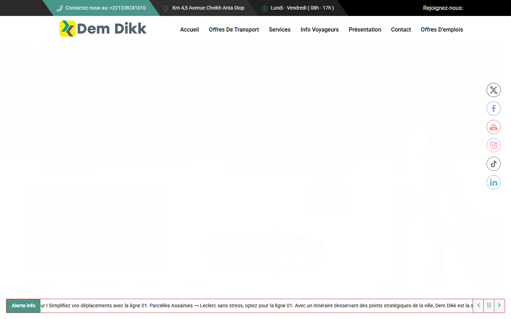
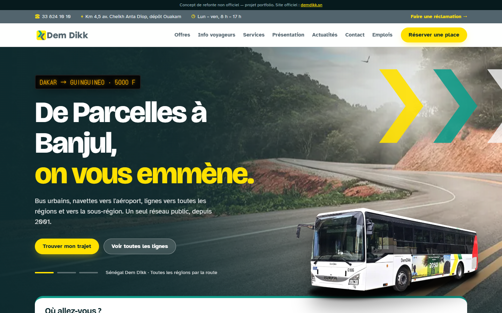
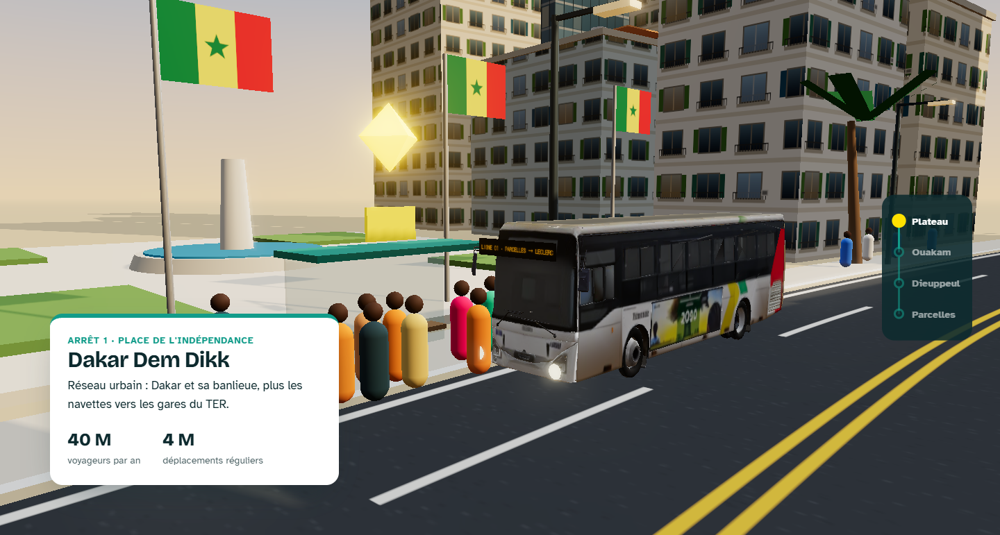
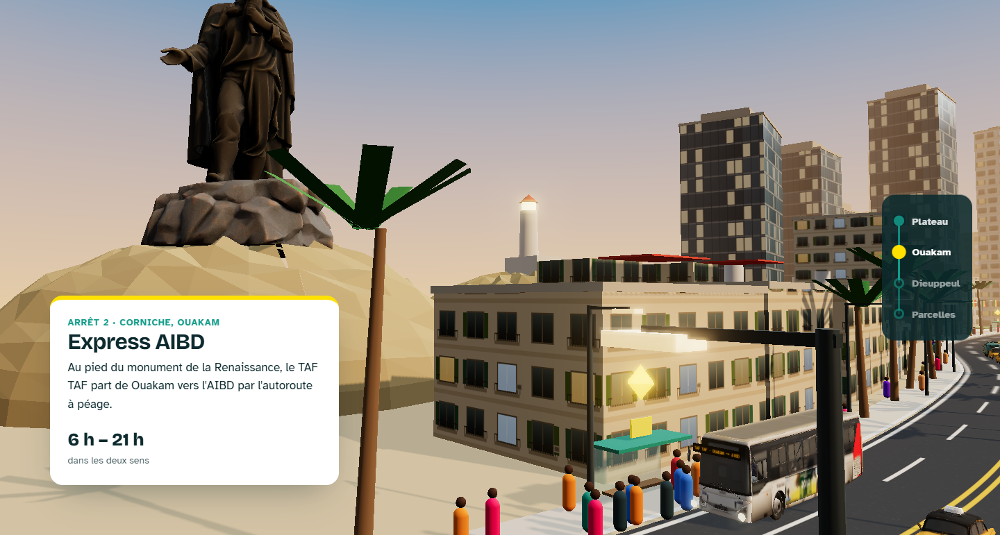
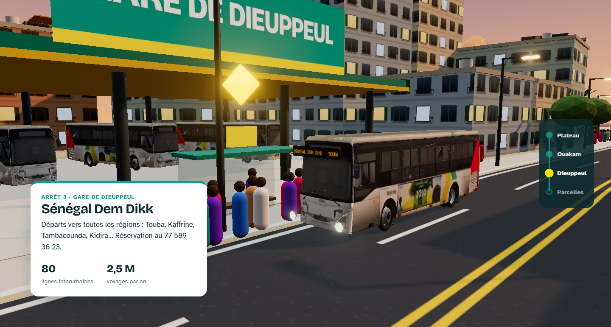
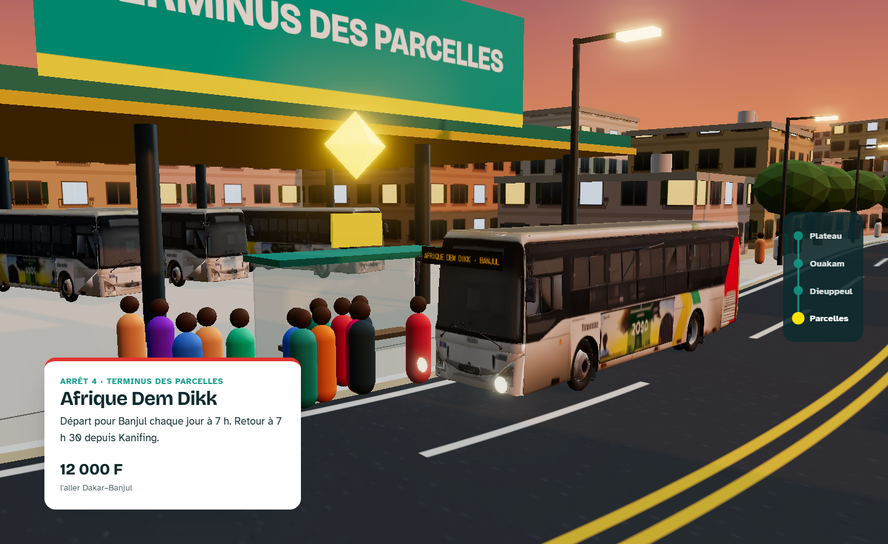

Avant · demdikk.sn Après · conceptCe qui change
- Une page d'accueil qui bougeAvant : l'accueil enchaîne des affiches chargées de texte, difficiles à lire sur téléphone.Photos officielles en fondu avec zoom lent, titre qui apparaît mot à mot, bus détouré qui arrive et suit la souris, chevrons du logo animés.
- Trouver un trajet en deux clicsAvant : aucune recherche, les horaires sont dans les actualités.Départ, arrivée, résultat parmi près de 50 lignes réelles, avec horaires et prix. Raccourcis pour les trajets fréquents.
- Toutes les lignes sur une pageAvant : une longue liste de texte sur une page à part.Onglets Dakar urbain, Banlieue, TER, TAF TAF, Régions, International et Gares, avec un filtre instantané par arrêt ou numéro.
- Chaque réseau mis en valeurAvant : quatre petites vignettes sombres pour présenter les offres de transport.Grandes cartes inclinables avec photo, nombre de lignes et tarif, reliées directement aux horaires.
- Tout le contenu du site, enfin rangéAvant : services, histoire et contact éparpillés sur 6 pages, « Offres d'emplois » en erreur 404.Services en accordéon, frise historique, actionnariat, actualités, appli, emplois, carte et formulaire de contact sur une seule page.
- Un site sainAvant : le code de la page d'accueil contient des centaines de liens cachés vers des sites de jeux d'argent (piratage SEO).Code propre et léger, police lisible, navigation au clavier, animations réduites si le système le demande.
Bonus : le voyage en 3D
Plus bas sur la page, le vrai bus Dem Dikk (modélisé en 3D à partir de la photo officielle) traverse Dakar quand on fait défiler : Plateau, Corniche, Dieuppeul, Parcelles. Taxis jaunes, cars rapides, passants et coucher de soleil sur l'Atlantique.



